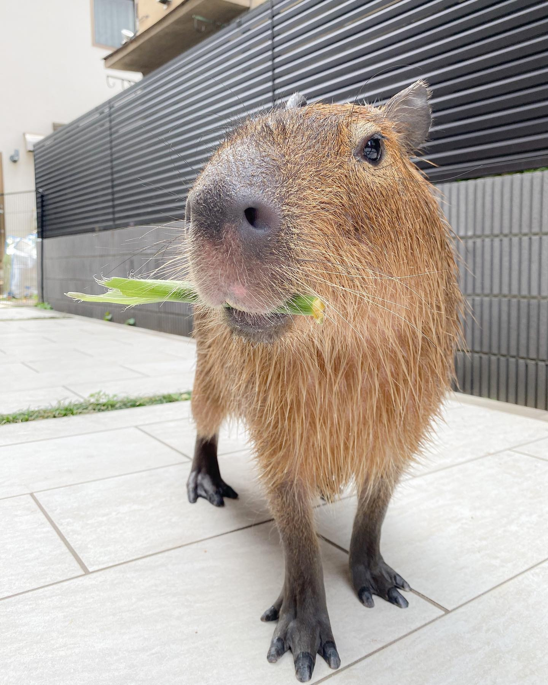
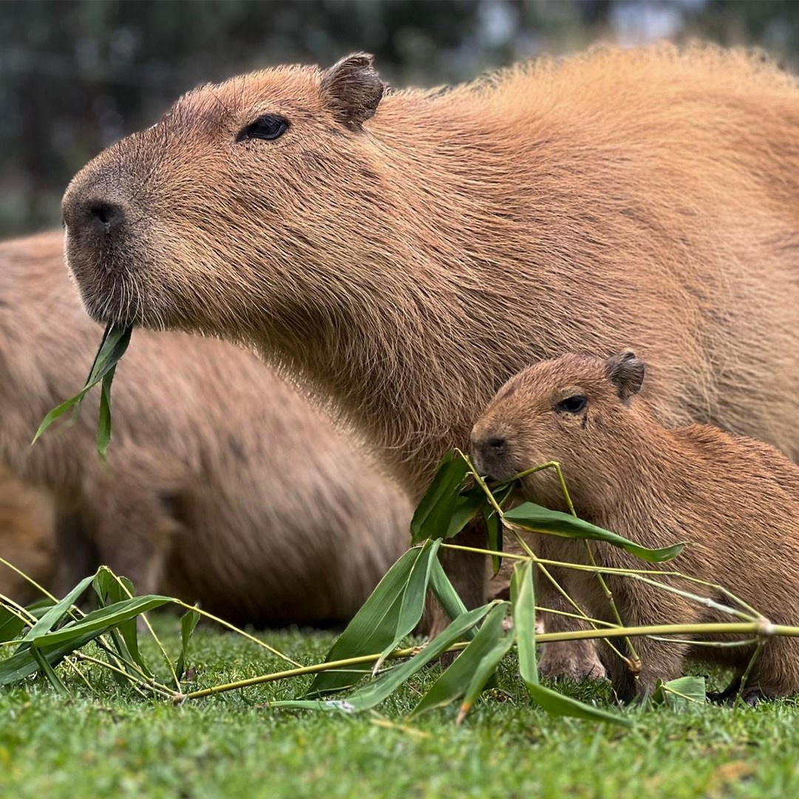
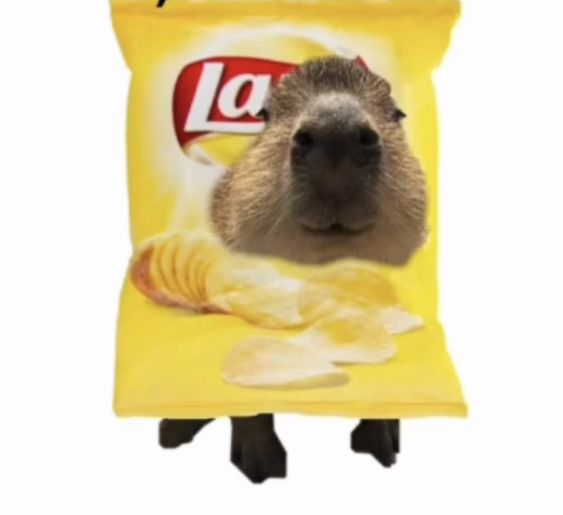

Питаются эти "крохотные" зверьки исключительно травой, сеном, различными плодами, клубнями и водными растениями.
А чтобы наесться, взрослой капибаре за день нужно съесть 3,5 кг травы.
Кстати, для лучшего переваривания пищи эти грызуны едят свои фекалии.
Делают это основном по утрам, когда отходы их жизнедеятельности богаты бактериями, переваривающими пищу предыдущего дня.
Они пасутся на полях и потребляют травы и злаки.
Также эти животные питаются молодыми побегами, ветками, корой и листьями разных деревьев и кустарников.
А ещё могут есть водные растения, такие как рогоз, кувшинка и водный шпинат.
Капибары также едят фрукты, когда могут их найти или если их угощают люди.
Они любят апельсины, груши и арбузы. За день ест от 3 до 4 кг.
В отличие от большинства грызунов, капибары не могут удерживать пищу передними лапами во время кормления.
Чтобы поесть, они садятся «на корточки».
Как и у людей, организм капибары не способен вырабатывать свой собственный витамин С, поэтому им приходится восполнять его через питание.
Известно, что капибары, выращенные в неволе, нередко заболевают цингой из-за недостатка витамина С.
